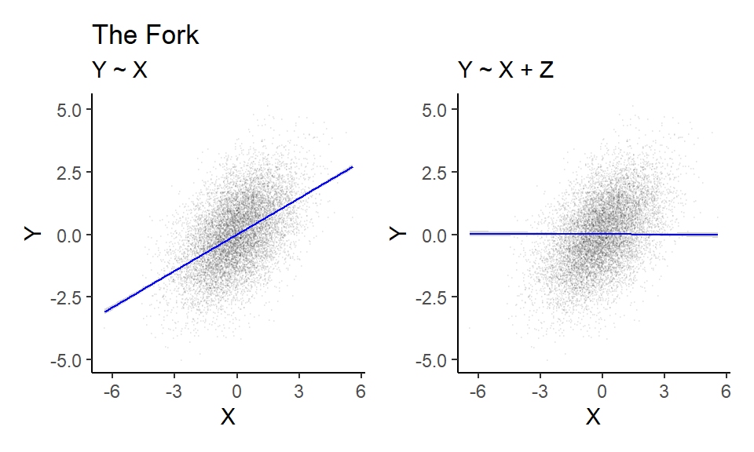
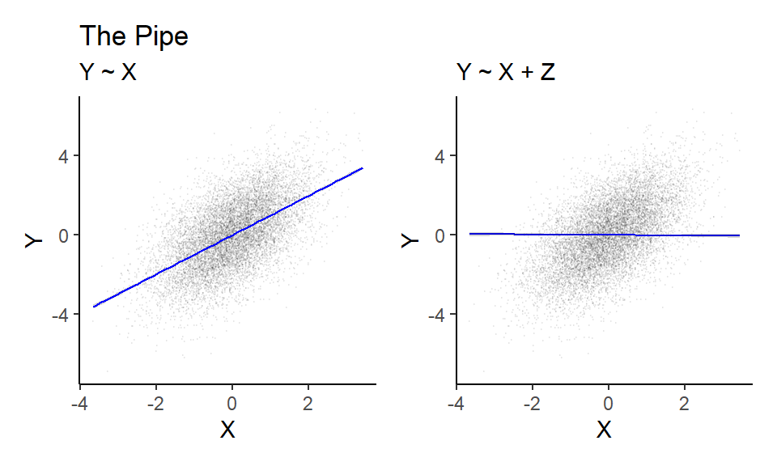
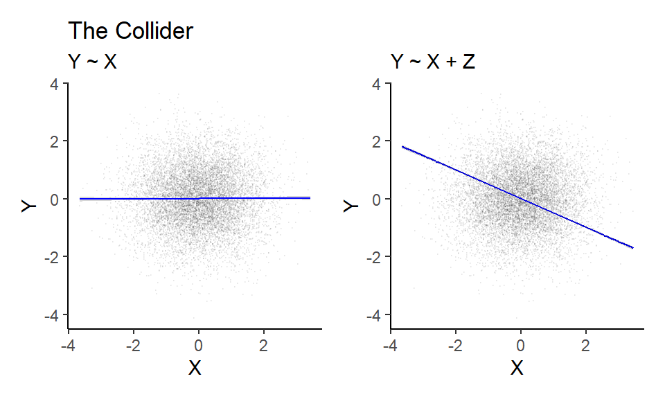

Chapter 2 Causal Graphs
2.1 The Fork
We first simulate some data from the simple ‘Fork’ DAG.
set.seed(1747)
n <- 1e4
bZ <- 1
Z <- rnorm(n, 0, 1)
X <- Z*bZ + rnorm(n, 0, 1)
Y <- Z*bZ + rnorm(n, 0, 1)We then write a function for fitting and plotting our models that we can re-use for the ‘Pipe’ and ‘Collider’ scenarios. This function depends on the {ggplot2} and {patchwork} packages.
library(ggplot2)
library(patchwork)
plot_scat <- function(data, title){
# Y ~ X
p1 <- ggplot(data, aes(x=X, y=Y)) +
geom_point(alpha = 0.05, size = .1) +
geom_smooth(method='lm', color = "blue", size = 0.5) +
theme_classic() +
labs(title = title, subtitle = "Y ~ X")
# Y ~ X + Z
model <- lm(Y ~ X + Z, data = data)
new_data <- transform(data,
Z = 0)
predictions <- predict(model, newdata = new_data, interval = "confidence")
p2 <- ggplot(data, aes(x = X, y = Y)) +
geom_point(alpha = 0.05, size = .1) +
geom_line(data = new_data, aes(y = predictions[, "fit"]), linewidth = 0.5, color = "blue") +
geom_ribbon(data = new_data, aes(ymin = predictions[, "lwr"], ymax = predictions[, "upr"]), alpha = 0.2) +
theme_classic() +
labs(subtitle = "Y ~ X + Z")
return(p1 + p2)
}We then apply the function to the simulated data.

2.2 The Pipe
Similarly to above, we simulate data from the ‘Pipe’ DAG…
set.seed(1747)
n <- 1e4
bZ <- 1
bX <- 1
X <- rnorm(n, 0, 1)
Z <- X*bX + rnorm(n, 0, 1)
Y <- Z*bZ + rnorm(n, 0, 1)… and then apply our custom fitting and plotting function.

2.3 The Collider
Exactly the same approach as above.
set.seed(1747)
n <- 1e4
bX <- 1
bY <- 1
X <- rnorm(n, 0, 1)
Y <- rnorm(n, 0, 1)
Z <- X*bX + Y*bY + rnorm(n, 0, 1)
plot_scat(data = data.frame(Y=Y, X=X, Z=Z), title = "The Collider")
2.4 Post-treatment bias
Again, following the same approach, we simulate data from the post-treatment DAG.
set.seed(1747)
n <- 1e4
bZ <- 1
bX <- 0.5
bY <- 1
Z <- rnorm(n, 0, 1)
X <- Z*bZ + rnorm(n, 0, 1)
Y <- Z*bZ + X*bX + rnorm(n, 0, 1)
P <- Y*bY + rnorm(n, 0, 1)Next, we fit two models: One that adjusts for the post-treatment variable P…
##
## Call: glm(formula = Y ~ X + Z + P, data = data.frame(Y = Y, X = X,
## Z = Z, P = P))
##
## Coefficients:
## (Intercept) X Z P
## 0.01018 0.25354 0.50133 0.48813
##
## Degrees of Freedom: 9999 Total (i.e. Null); 9996 Residual
## Null Deviance: 34040
## Residual Deviance: 4895 AIC: 21240… and another that doesn’t.
##
## Call: glm(formula = Y ~ X + Z, data = data.frame(Y = Y, X = X, Z = Z))
##
## Coefficients:
## (Intercept) X Z
## 0.007601 0.495594 0.987202
##
## Degrees of Freedom: 9999 Total (i.e. Null); 9997 Residual
## Null Deviance: 34040
## Residual Deviance: 9793 AIC: 28180We see that only the latter model picks up the correct estimate for X, which was 0.5 in this case.